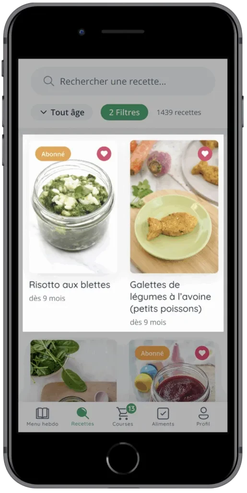

Cuisinez pour Bébé: 1,800 recipes, one free hand.
Turning a popular recipe website into an app that a busy parent can use in seconds: find the right recipe for their child's age, plan the week, cook without getting lost.
- Role
- UX/UI Designer
- Team
- 2 designers, 1 lead developer
- Platforms
- iOS & Android (React Native)
- Context
- BearStudio, February 2026
- Scale
- 1,800+ recipes, 150,000+ visits a month on the website

The context
Cuisinez pour Bébé started with the home-made recipes of Clémence, a young mum who wanted healthy, simple and varied food for her child. The blog became a go-to website for introducing solid foods: over 1,800 recipes sorted by age, weekly batch-cooking menus and a very active community.
That success revealed a need. Most parents were already browsing the site on their phones, and they wanted faster access to their recipes, favourites and menus, in a real app.
The challenge
Bringing a whole world of content to mobile, without making it heavier.
The app had to be a natural extension of the website, with three product constraints:
- navigation organised by the child's age
- easier access to the batch-cooking menus
- a freemium model that's easy to understand and doesn't block discovery
All for someone who rarely has both hands free: a child to look after, something cooking, a phone held in one hand.
My role
I worked as a pair with BearStudio's Lead UX/UI Designer, alongside the Lead full-stack developer.
- Understand young parents' needs and expectations on mobile
- Structure the information architecture and user flows
- Prototype, from low to high fidelity
- Iterate with the clients, version after version
On the technical side
Working closely with the developers shaped many design decisions.
From V1 to today
V1: laying the foundations
The first version brought over the website's key features. The goal wasn't to optimise every interaction, but to validate the core flows and the value of an app: weekly menus on opening, a catalogue by age, recipe pages, favourites, profile, paywall and guided sign-up.
Today: thinking in journeys, not screens
Iterating with the clients, we reorganised the app around five key journeys:
- Planning the week's meals without having to decide
- Quickly finding a suitable recipe (age, texture, time of day)
- Cooking without friction, with clear, continuous reading
- Tracking food diversification over time
- Managing a family profile and premium access without confusion
Since then, new features have arrived: support for several children in one account and a shopping list. The premium access screens were also reworked to be clearer.
The method
Every change goes through interactive prototypes before development, to catch the classic mobile pitfalls early: visual overload, awkward gestures, overly complex filters, secondary actions that stand out too much, a break between the list and the detail view.
- Prototypelow then high fidelity
- Simulatereal sequences
- Observewhere people get stuck or hesitate
- Adjustwith the clients, then ship
The prototypes check four things:
- that people understand where to tap, when and why
- that navigation stays shallow, with no dead ends
- that dense lists stay readable and well structured
- that screens stay consistent with each other
This approach set four rules for the whole app:
- Prioritise: photo, title, age, and nothing more at first glance.
- Shorten the path to action: open, favourite or add to the shopping list without an extra screen.
- Create “hub” screens, like the weekly menu or the recipes, that bring together the main need.
- Keep visual continuity: a card understood in the catalogue is understood in the favourites and the menu too.
Close-up: the recipe card
The catalogue isn't an advanced search engine. It has to help a parent decide quickly, based on their own criteria: age, texture, type of meal, dietary constraints. It plays three roles at once: inspiring, helping to sort, and giving quick access to action (cook, save, plan).
There were many constraints: lots of recipes to display, sometimes very long titles and uneven data, several criteria to combine, short gestures on mobile, and continuity to keep between the list and the recipe page. The risk was twofold: an overloaded catalogue, or filters so complex they discourage exploring.

1 The card as the unit of reading
Each card allows three quick reads: recognise the idea from the image, understand the dish from the title, confirm that it's age-appropriate. The image dominates, because photo quality is one of the brand's strengths. The title is sized for long names. The age is visible, but secondary.
2 Filters as the main lever
Rather than a hidden option, filters gradually narrow the choice without mental effort:
- clear groups: diet, type of dish, time of day, season, special needs
- quick, thumb-friendly selection
- explicit confirmation, when the parent is ready, not on every tap
- instant feedback on the number of recipes found


A long-term collaboration
BearStudio has been working with Cuisinez pour Bébé since 2021. The work relies on trust and responsiveness: Slack messages, regular check-ins, and Loom videos to explain an expectation or ask for feedback.
That rhythm is what lets the app keep evolving after V1, as close as possible to what parents experience.
What parents say
In App Store and Google Play reviews, and in messages sent to the brand, the same themes come up: ease of use, clear recipes, time saved when planning meals, and trust in the content.
The app today
The screens above show the previous version, our starting point. Here's what the app looks like today, after these changes: the recipe catalogue, a recipe page and the weekly menu.

Learn more
Open to a permanent role · Paris area
Your next Product Designer might just be me.
I'm looking for a team where I can design useful products, from the field all the way to code. Let's talk.